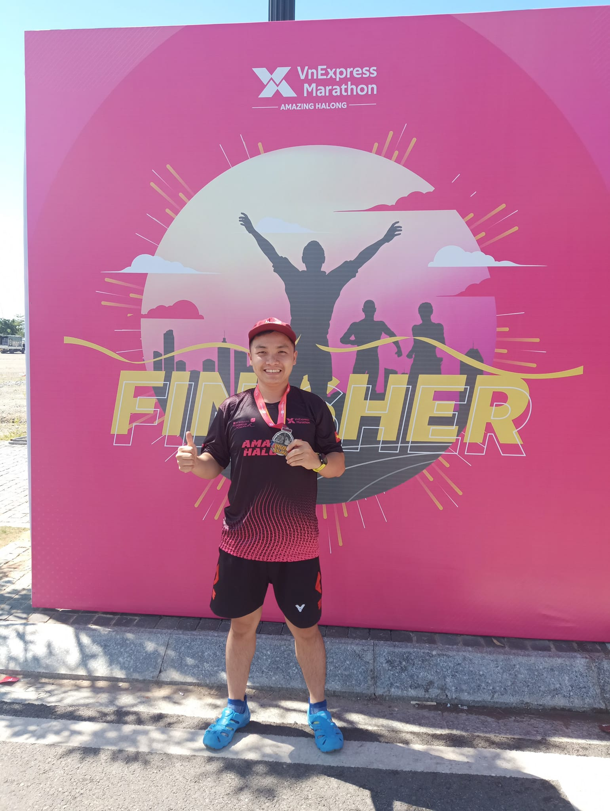

My Marathon completion journey
- 10 mins
From the time I started running (December 2020) to the time of writing this blog, I have run 127h, with a distance of 1222km, the longest distance is the Half marathon. These numbers will continue to increase.
1. How did I come to run?
1.1. What a coincidence!
I became addicted to running once I happened to participate in the company’s running race in December 2020. The race is held within 1 month, with 3 target levels of 100, 150 or 200km. Of course, for someone who hasn’t run in a long time, I would choose 100km as my goal with an attitude of not expecting much. It is this attitude that has helped me discover many interesting points about running that I will share in the following sections.
1.2. Why do I like to run?
At first, I think it’s a satisfying, refreshing feeling similar to participating in any outdoor sport. Next, running allows me the freedom to explore the world on my own two feet without being dependent on any means. This also helps me to generate many ideas of interesting trips to explore to new and distant lands. The final reason is that health is largely improved by running:
- I live a healthier life. Thanks to running, I gradually formed a habit of taking care of my health more, starting to pay attention to my heart rate, practicing regular breathing, practicing foot landing, proper arm swing or warm-up thoroughly to avoid injury.
- My fatty liver level II is now gone, there is no blood fat and the excess level of uric acid is also very low. Of course, to achieve these results also thanks in part to the diet.
- Realize your weight loss goals more effectively. Here’s my weight change since I started running (updated weekly) and I think everyone should have one. I have lost 5kg in the first 2 months and maintained it until now.
1.3. Why should everyone run?
First of all, I think running is a natural human instinct. People can run a lot with very few injuries. Second, running is a low-cost sport, very easy to start, and has no limits. You can run in many different terrains, from plains to hills, to the coast… anywhere you want to go and explore. You can run with basic sneakers or sandals, a sneaker or even run barefoot in the clothes you wear to bed. Running is like any other sport, very essential for every human life which helps to release stress, keeps them fit and fine, improve their general health, to make friends, or to enjoy social recreation and entertainment. In addition, running can help us change our mindset in a positive way, we will be more active, we will not be afraid to walk in increasingly congested traffic conditions like today.
2. Training process
2.1. Achievements in the running race (December, 2020)
- First week: my first 2km and 5km

The first week of the race, I had a hard time maintaining a steady, continuous running speed for a period of time. Reaching the first 2km up to the 5km in a row is a huge achievement for me. Later when I ran longer, I realized that this was the best moment, when the body was not too tired and kept a lot of excitement. The image on the right here are my running results measured using the Strava app installed on my phone.
- Second week: my first 10km

Next, I ran the first 10km in the second week, but the running process was still interrupted by my resting rhythms due to my inexperience with long runs.
- Third week: my first 15km

Once I was able to run 10km, I set a goal to “graduate” from the Half-Marathon (21km). To do that, I conquered 15km in the 3rd week. At this time, I paid attention to warm up carefully and replenish water during the run to be able to run continuously. My average Pace has improved significantly around 6:15 to 6:30 per km.
- Fourth week: 21km

I finally finished the HM run at the end of December 2020. Even though I hurt my leg and couldn't walk properly, and even had to crawl up the stairs when I finished running, the feeling of achieving my goal was amazing. I finished the company's race with a total of 150km passed and officially became addicted to running.
2.2. My first official community Half Marathon
After completing the first HM in my life, I have maintained about 3 running sessions a week, each session averaging 5-7km and longer on weekends. I started signing up for community races so that my running results were more “official” instead of being measured by phone. However, due to the Covid-19 epidemic, the tournament was postponed several times; I can’t go to Ha Long to run until July 2022, even though I registered more than 1 year ago. The prize that I participated in is the Vnexpress Marathon Amazing Halong organized by Vnexpress newspaper. The tournament was organized very professionally, from receiving the BIB to completing the distance, all were fully supported. This makes me very satisfied when I spend money and time participating in the tournament. To prepare for this tournament, I maintain a long run of 10-15km per week in the morning to match the actual running time within 1 month before the official run date. My goal is to finish HM within 2 hours (HM sub2) Finally, I have officially completed the Half Marathon within 2 hours from the time of starting the hole in December 2020 (so far 1 year and 8 months). The most challenging is to cross Bai Chay bridge with a height of up to 32m. Thoughts of giving up but being buffed to 4:30 pace when going downhill is a great motivation for suffering later.

Although completing HMs exceeded my expectations, every time I finish, I always think 21km is more than enough. I should not make it difficult for myself. However, something prompted me to do FM on a special occasion. This led to the following results.
2.3. My first Full Marathon
After completing the HM sub2 in Ha Long, I tried to run the Full Marathon twice on my birthday (October) and Christmas (December). However, I failed. The reason is that after km 21, I felt my feet hurt and my body was not prepared for this great distance. Just like experienced runners shared: “FM is not like running 2 times HM”. The more you increase the distance, the more tired your body will be and your excitement will decrease.

In the end, whatever comes must come. Refusing to run HM forever, I tried again at the beginning of the new year 2023 and finished my first Full Marathon. As such, I completed the FM journey on the 3rd and previous 5 HM attempts with:
- 2 liters of electrolytes
- 1 banana
- 2 cereal bars and 1 loaf of bread (unexpectedly hungry in the last few kilometers). Although I have completed the Full Marathon, I must admit that for me HM is the best distance with moderate effort and keeping the excitement throughout the journey.
3. Some memories and lessons learned
- Should I buy specialized equipment to start running?
It is not necessary to invest too much money in the first place. I think we should start simple until we’re really passionate: simple clothes, simple tracking method (by mobile phone, watch), simple shoes. You will have many options for each device you bring, so calmly consider the best fit. Take the example of shoes, if you consult, you will see many different opinions to choose shoes depending on your budget, durability, beauty, speed boost, or sandals will be appropriate. I have tried running sandals for different distances (5k, 10k, HM) and found that running sandals would be the best option for short distances, high speed. However, with a long running distance (>15km), running in sandals is not good for feet with shoes, easily leading to foot pain and injury. Once passionate, besides consulting reviews, taking the time to experiment to choose the right equipment will be very interesting and not wasted.
- Something to do before and during the run. The experience that I learned after having swollen feet and having to abstain from walking for 1 week are some important notes as below:
- Before running, warm up for at least 5 minutes, especially the leg area
- Limit speeding too quickly (meaning rapid changes in heart rate), especially when the body is not used to the pace (for example, you have not run in a long time), avoid injuries such as sprains.
- Keep your heart rate consistent: keep your heart rate within your physically appropriate heart rate zone. I usually keep my running heart rate steady between 130-165 (mostly 140-150). In the long run, a real-time heart rate monitor will be worth owning.
- Provide adequate water: With thick runs, I find 3-5km of water buff to be reasonable. This I have tried many times before giving specific numbers, you can completely experience and have your own numbers.
- Should you practice long strides?
My normal running stride is only 97-105 cm. I feel envious when I know that some pacers can reach a stride of 120-140 cm and spend time training to improve their stride. As a result, I increased my pace a bit, but in return I felt uncomfortable running and sore feet. After researching more about this issue, I found that most people agree that increasing stride is not necessary, let the running posture be the most natural.
In short, for me, running is a process of self-discovery and self-understanding. You may not need a teacher but can learn through trial and error and find the right fit on your own. I think every one of us, young or old, should run. Let’s start simple: short distance, low speed, simple outfit. Let running gradually positively affect you naturally by maintaining the habit of wearing shoes every day.

Manh Nguyen
A runner who loves data